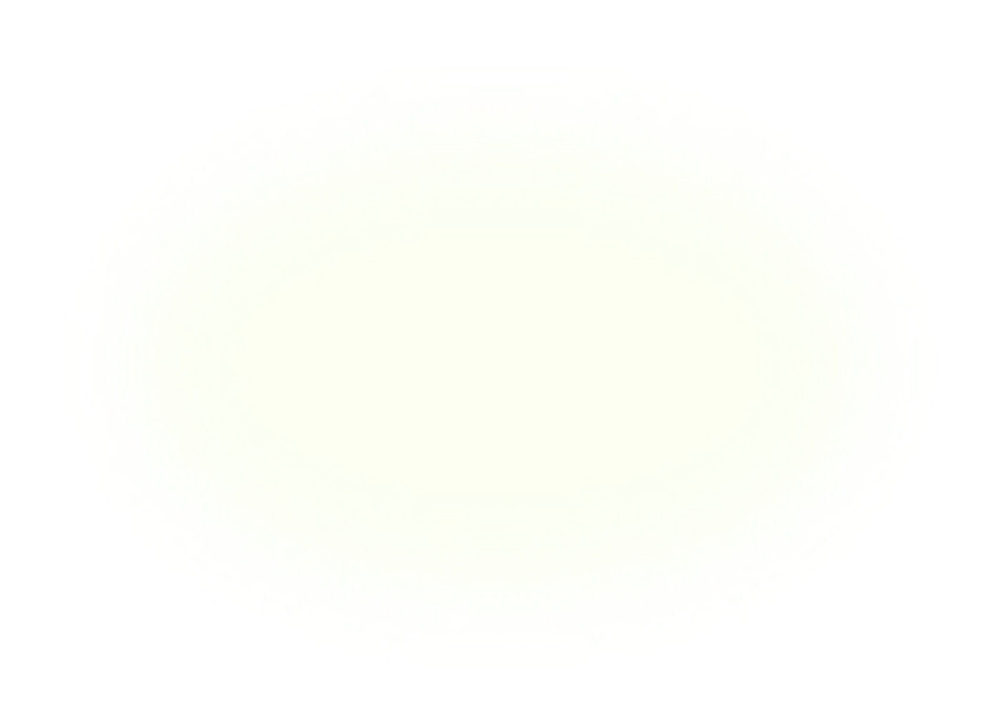
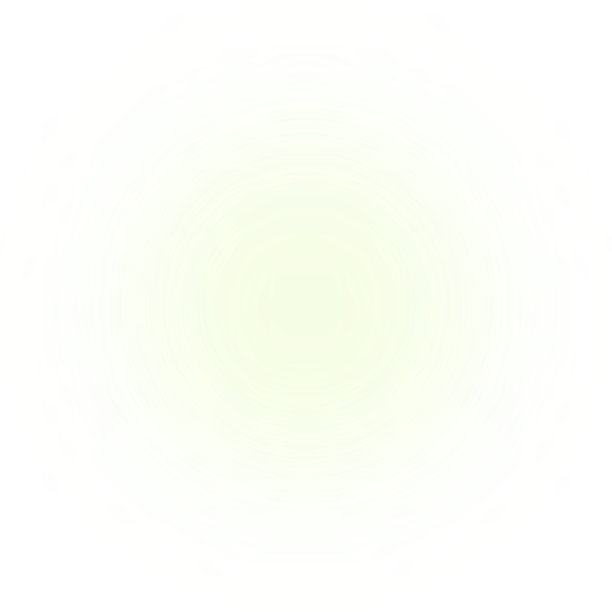
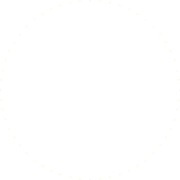
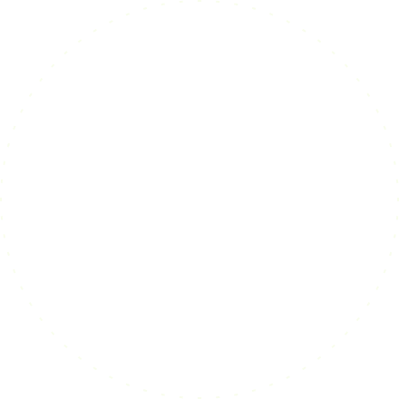
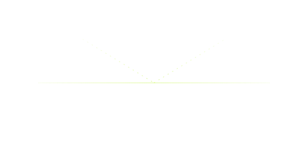

01
One canvas, every branch
Drop a trigger, add a condition, split the path. A step that fails at 3am is retried four times.
run 41982
finished in 129 ms
- read refund 0 ms
- check amount 0 ms
- branch, over 5000 0 ms
- ask finance on Dana

EXPEDITION 07 · LOW EARTH ORBIT · 408.4 KM
Autonomous mission health oversight, personalized crew baseline telemetry, and clinical operations for deep-space exploration.
ISS · 51.6° N / -54.2° E · MISSION ELAPSED 126D 08H 42M 19S · 04 PERSONNEL
EXPEDITION 07 / LOW EARTH ORBIT /
408 KM
EXPEDITION 07 / 408 KM /
04 CREW NOMINAL
Expedition 07 Telemetry Hub
100%
running
Heart Rate > 80 BPM
condition
Log to Mission Control
houston downlink
Clinical Diagnostic Bay
automated triage
26 min
true
else
last runs
Biometric Vitals Stream
crew telemetry
connects to 240 apps, and to whatever you built yourself
connects to 240 apps, and to whatever you built yourself
Copy this into that. Check it went through. Ask Dana if it is fine. Relay takes the glue and leaves you the decisions.
01
Drop a trigger, add a condition, split the path. A step that fails at 3am is retried four times.
run 41982
finished in 129 ms
02
Send a step to Slack, get a yes or a no, keep moving. Nobody learns another dashboard.
#flight-surgeons
today
waiting 26 min
03
Inputs, outputs and timings for 90 days. Replay any run before you trust it with money.
[ expedition 07 clinical infrastructure ]
orbital telemetry sync
now
Autonomous clinical decision support, air-gapped emergency protocols, and medical lab inventory readiness.
NASA Orbit Health processes real-time ECG, SpO2, and ECLSS life support signals with zero latency across deep space.




telemetry, waveforms, clinical limits, replay
one clinical engine, every astronaut connection
Continuous monitoring across Expedition 07 personnel: Commander Elena Vasquez, Flight Surgeon Dr. Marcus Chen, Amara Okafor, and Luca Moretti.
crew status and vital telemetry indices
a payload never leaves the lane it started in
Four astronaut profiles for a mission wellness, biometric telemetry, and operational spaceflight concept.
telemetry sync in 4 secsync 4 sec
82%
of spaceflight physiological signals stay within nominal baselines

3 personnel
All 4 astronauts active in Low Earth Orbit (Expedition 07)
Every run stays in the region that started it
Counted across Expedition 07 medical operations. Aerospace clinical metrics verified in Low Earth Orbit.
volume
62,000vital telemetry packets handled per hour
100% telemetry integrity in orbit
The multi-waveform telemetry allows us to track cardiovascular shifts before symptoms emerge.
time back
11hours cumulative EVA spacewalk duration
across 4 Expedition 07 astronauts
Having autonomous differential diagnosis in deep space changes what we can survive.
first attempt
99%of spaceflight operations execute without clinical incident
all ECLSS life support systems nominal
The SANS ocular countermeasures and ECLSS life support keep our team focused on the mission.
Adjust operational telemetry modes from routine orbital monitoring to active EVA and emergency clinical triage.
a month
a month
most picked
a month